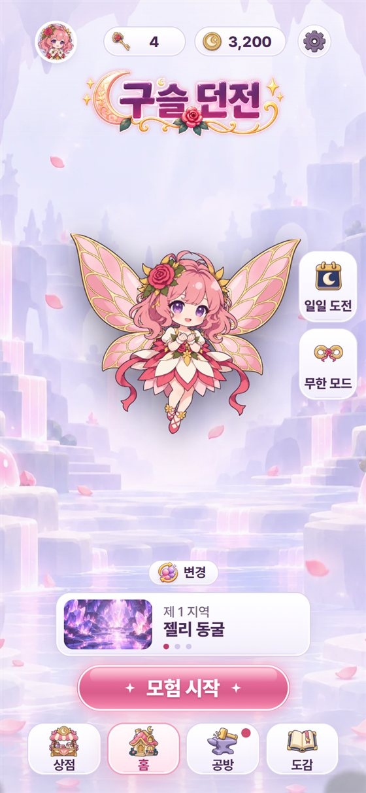
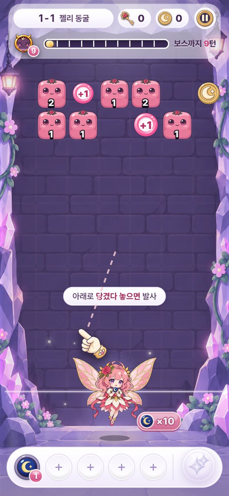
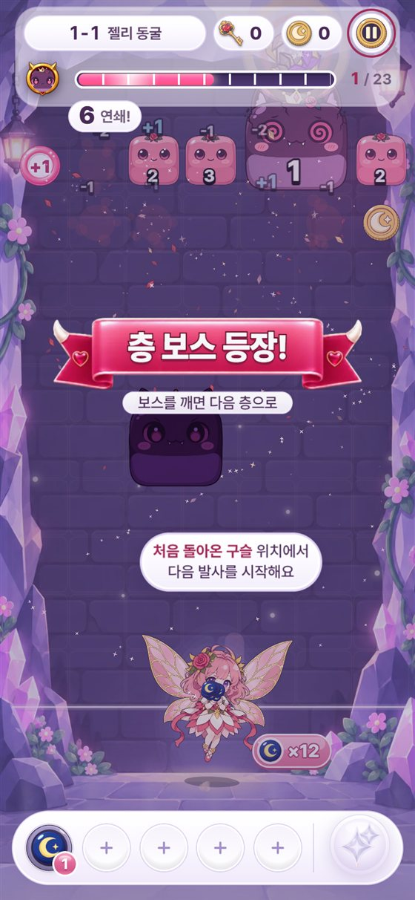
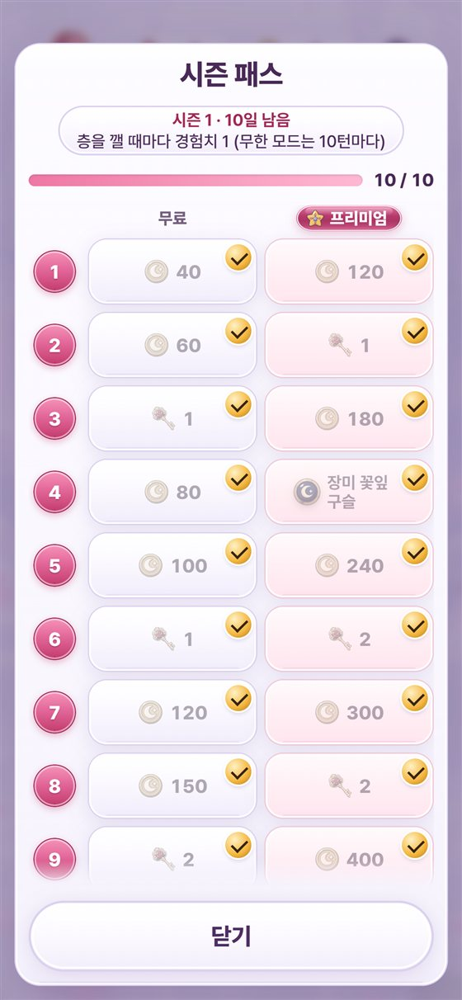
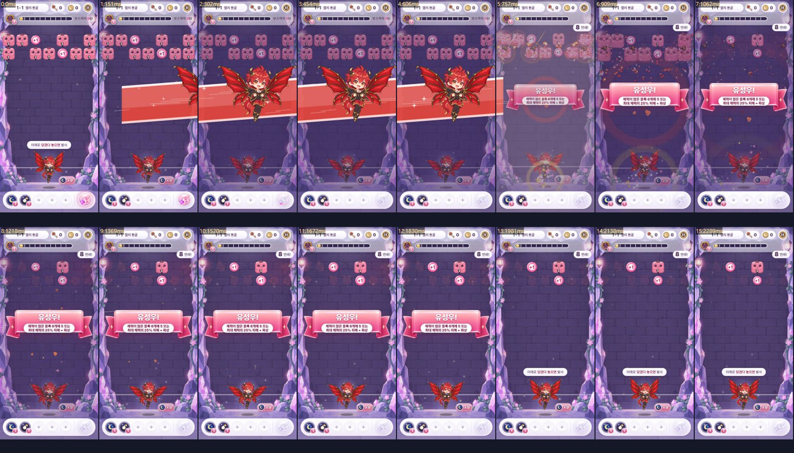
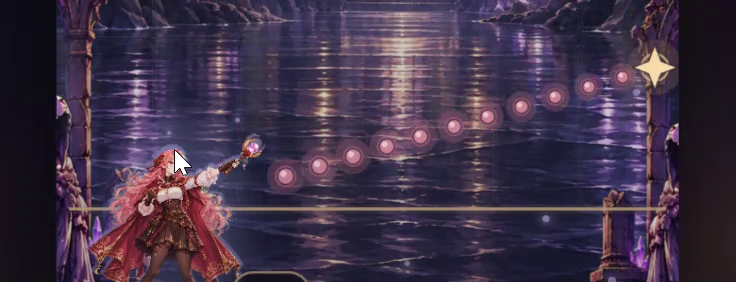
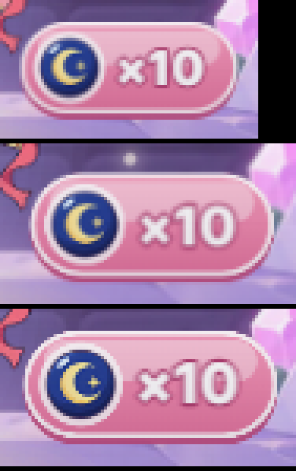
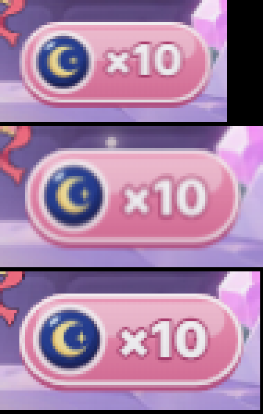

4→1.5배
구슬 꼬리 길이 (지름 대비)
프레임 수로 자르던 궤적을 길이 기준으로 바꿔, 구슬과 꼬리가 사슬처럼 이어지던 잔상을 없앴습니다.
RENDER · trimTrailSolo Project · Mobile Web Game · AI-assisted
AI로 빠르게 만들고,
결과는 숫자로 확인합니다.
공 튕겨깨기와 구슬 조합 로그라이트를 합친 모바일 웹 게임을 기획서 작성부터 구현, 배포, 출시 점검까지 혼자 만들고 있습니다. Claude Code로 구현하고 Codex로 리뷰받되, 증상은 녹화와 측정으로 다시 확인하고 고친 문제는 자동 테스트로 고정했습니다.

프레임 수로 자르던 궤적을 길이 기준으로 바꿔, 구슬과 꼬리가 사슬처럼 이어지던 잔상을 없앴습니다.
RENDER · trimTrail첫 수정은 틀렸고, 그림 맞춤 도구가 팔까지 포함해 크기를 맞추던 것이 진짜 원인이었습니다.
TOOLS · front-pose-fit.pyCSS 변수가 최상위에서 계산되어 모든 버튼 끝이 28px로 고정되던 것을 요소마다 다시 계산되게 했습니다.
STYLE · var(--bh)목표 50~70% 안에 들어오는지, 조준 봇이 수백 판을 자동으로 플레이해 확인하며 수치를 조정했습니다.
SIM · 300판 · 3지역새 기능은 테스트와 함께 만드는 것을 규칙으로 두고, 고친 버그는 회귀 테스트로 남겼습니다.
VITEST · Playwright첫 방문 직후 오프라인으로 열면 켜지지 않던 문제를 서비스 워커 캐시 목록으로 해결하고, 공개 주소에서 자동 확인합니다.
DEPLOY · Service Worker턴제 공 튕겨깨기 퍼즐 + 구슬 조합 로그라이트
한 손가락으로 당겼다 놓으면 구슬 수십 개가 튕기며 블록을 깎는 턴제 퍼즐입니다. 층을 깰 때마다 구슬을 고르고 합쳐 성장하고, 3지역 × 10층을 내려가 보스를 쓰러뜨립니다. 기획서(GDD)에 게임 루프, 턴 진행 순서, 데이터 구조, 수익화와 라이브 운영, 밸런스 목표까지 먼저 정리하고 그 문서를 기준으로 개발했습니다.



Ballz, BALL x PIT, Holedown을 분석해 가져올 것과 피할 것을 표로 정리했습니다. 쉬운 조작은 살리고 조합 성장의 깊이를 더하되, 모바일 캐주얼 유저에게 부담인 실시간 조작은 뺐습니다.
조작은 쉽지만 성장이 얕고, 과한 광고로 평가가 나빠진 사례
조합의 재미는 크지만 실시간 조작은 한 손 모바일에 부담
조준 각도와 조합을 고민하는 퍼즐로 원작과 감각이 겹치지 않음
1지역 64.7% · 2지역 27.3% · 3지역 11.3%

게임 규칙 코드는 화면 API를 쓰지 않고 시드 난수만 써서, 같은 판을 언제든 다시 재현할 수 있습니다. 덕분에 봇 시뮬레이션과 회귀 테스트가 화면 없이 빠르게 돌아갑니다.
화면 API 없음, 시드 난수로 재현 가능
구슬·블록·유물은 데이터로만 추가, 자동 문법 검사
이펙트·HUD·캐릭터 리그, 해상도별 그림 축소
서비스 워커 오프라인, 공개 주소 자동 점검
작업 규칙 파일(CLAUDE.md)을 직접 만들고 고쳐 가며, AI가 지켜야 할 기준을 정했습니다. AI 리뷰도 재현해 보고 맞는 것만 반영했습니다.
기준값과 턴 순서는 기획서를 따르게 해서, AI가 편의대로 규칙을 바꾸지 못하게 했습니다.
새 기능은 테스트와 함께, 테스트가 실패한 채로 작업을 끝내지 않는 것을 규칙으로 두었습니다.
문제, 변경, 확인 결과를 PROGRESS.md에 남겨 다음 작업이 이전 맥락을 잃지 않게 했습니다.
Codex 지적 3건 중 1건은 코드로 확인해 오판으로 판단하고 반영하지 않았습니다.
"조준을 아래로 내릴수록 구슬 잔상이 엄청 여러 개로 보인다"는 피드백과 화면 녹화를 받았습니다.
먼저 궤적을 프레임 9개로 자르던 것을 길이 기준(지름 1.5배)으로 바꿨습니다. 그래도 남아 녹화를 프레임으로 뽑아 보니, 잔상처럼 보인 것은 쏜 구슬이 아니라 조준 점선이었습니다. 점 하나가 구슬만 하고 빛무리가 넓어 꼬리처럼 보였습니다. 점을 작고 또렷하게, 간격을 좁게, 멀수록 옅게 바꿨습니다.
구슬마다 짧은 혜성 꼬리만 남고 서로 이어지지 않습니다. 사용자가 말한 증상과 실제 원인이 다를 수 있다는 것을, 추측 대신 프레임으로 확인했습니다.

// 궤적을 뒤에서부터 재서 maxLen을 넘는 지점을 정확히 잘라 낸다
export function trimTrail(h: number[], maxLen: number): void {
let len = 0;
for (let i = h.length - 2; i >= 2; i -= 2) {
const seg = Math.hypot(h[i]! - h[i - 2]!, h[i + 1]! - h[i - 1]!);
if (len + seg > maxLen) { /* 경계에서 잘라 내고 앞부분 삭제 */ return; }
len += seg;
}
}"구슬을 쏘려고 누르면 캐릭터가 부자연스럽게 작아진다." 조준할 때 6~8% 웅크리는 연출을 원인으로 보고 지웠지만 같은 증상이 남았습니다.
그림을 게임에 넣는 맞춤 도구가 팔과 무기까지 포함한 실루엣 전체를 같은 높이로 맞추고 있었습니다. 팔을 든 조준 그림은 그만큼 몸이 10~20% 작게 들어갔습니다. 몸통 기준으로 높이를 대기 그림에 맞추는 Python 도구를 만들어 모든 포즈를 다시 맞췄습니다.
대기 → 조준으로 바뀔 때 몸 크기가 변하지 않습니다. Codex 리뷰 3건 중 2건은 재현되어 반영했고, "텍스처가 갱신되지 않는다"는 1건은 매 프레임 갱신됨을 코드로 확인해 오판으로 판단했습니다.
"코인·열쇠 알약 배경이 못생겼다", "버튼끼리 통일감이 없다"는 피드백을 받았습니다.
끝 반원 크기를 버튼 높이 변수 var(--bh)로 계산했는데, 이 변수를 쓰는 값들을 최상위 #app에만 선언했습니다. CSS 변수는 선언된 위치에서 계산되기 때문에 모든 버튼이 #app의 56px 기준으로 풀려 끝이 28px로 고정됐습니다. 하위 요소와 가상 요소에 다시 선언해 각 버튼 위치에서 계산되게 했습니다.
높이 32px 버튼은 끝이 16px 반원이 되어 테가 얇고 깔끔해졌습니다. 탭 경계 누르기, 끝 반원 = 높이 절반, 탭 넘침까지 재는 점검 스크립트를 만들어 4개 언어에서 확인했습니다.
구슬 수 표시(×10 알약)가 PC 화면에서 깨져 보인다는 캡처를 받았습니다.
원인은 세 가지였습니다. 그림을 화면의 2~3배로 만들어 밉맵 없이 줄여 픽셀을 건너뛰었고, 알약이 캐릭터 그룹 안에 있어 소수점 위치에 그려졌고, 작은 PC 창에서는 브라우저가 한 번 더 줄였습니다. 해상도를 1:1로, 기울지 않는 별도 층으로 빼고 화면 픽셀에 맞췄습니다.
PC 점검 모드(1366×768)를 만들어 화면 전체를 다시 훑어 체력 숫자·보스 그림·요정 날개의 같은 원인도 함께 고쳤습니다. 이 과정에서 점검 도구 자체의 배율 계산 버그도 찾아 고쳤습니다.


첫 방문 직후 오프라인으로 다시 열면 게임이 켜지지 않았고, 이미 지운 음성 파일이 공개 주소에서 계속 열렸습니다.
나중에 불러오는 스크립트 조각이 서비스 워커 캐시 목록에 없었습니다. 빌드 때 파일 목록을 만들어 미리 받게 했습니다. 지운 파일은 배포 설정이 기존 파일을 남기는 방식이라 쌓인 것이어서, 배포 스크립트가 이번 빌드에 없는 파일을 이 게임 폴더에서만 지우게 했습니다.
"첫 방문 → 오프라인 새로고침 → 실행"을 공개 주소에서 자동으로 확인합니다. 배포 전 버전을 받아 둔 브라우저로 다시 접속해, 옛 캐시가 지워지고 새 버전 하나만 남는 것까지 재방문자 상황 그대로 확인했습니다.
측정해 보니 일부 캐릭터의 필살기 소리 최고값이 0.9대로 높게 나왔습니다.
꼬리 음 -3dB, 연쇄 화음 빼기를 시험했지만 최고값이 그대로여서 둘 다 되돌렸습니다. 측정기에 "리미터가 실제로 누른 양"을 추가해 재 보니, 최고값은 리미터 앞의 순간값일 뿐이었습니다.
일곱 캐릭터 중 최대 0.6dB, 나머지 0dB로 소리가 눌려 납작해지는 문제는 없었습니다. 코드는 바꾸지 않고 "누름량 6dB 미만"을 자동 점검 조건으로 추가했습니다. 숫자 하나만 보고 멀쩡한 소리를 망치지 않으려 했습니다.
Contact
AI로 빠르게 만들고, 결과는 숫자와 화면으로 끝까지 확인하는 개발자 김현준입니다. 읽어 주셔서 감사합니다.